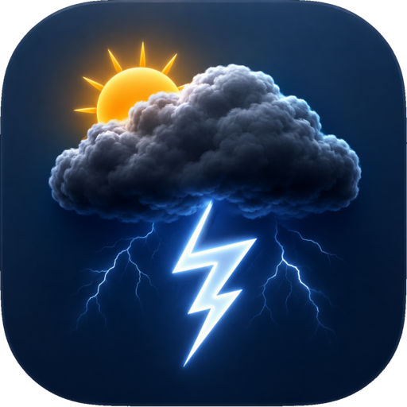

MY LOCATION
Regina
--°
Loading forecast…
H:--° L:--°
Forecast summary will appear here when Windy data loads.
Temperature
Surface temperature forecast

Loading map…
Thunder StruckMY LOCATION
Forecast summary will appear here when Windy data loads.
Surface temperature forecast

Loading map…